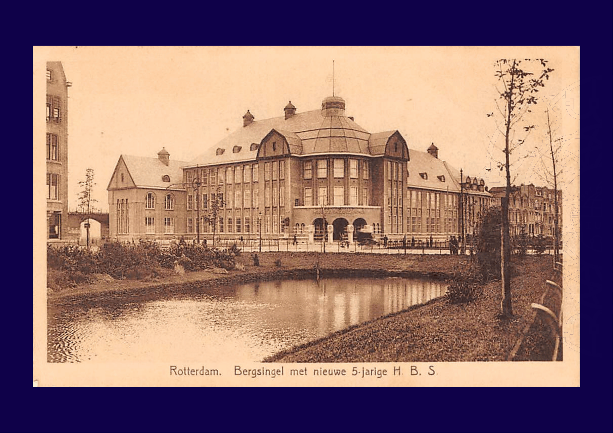
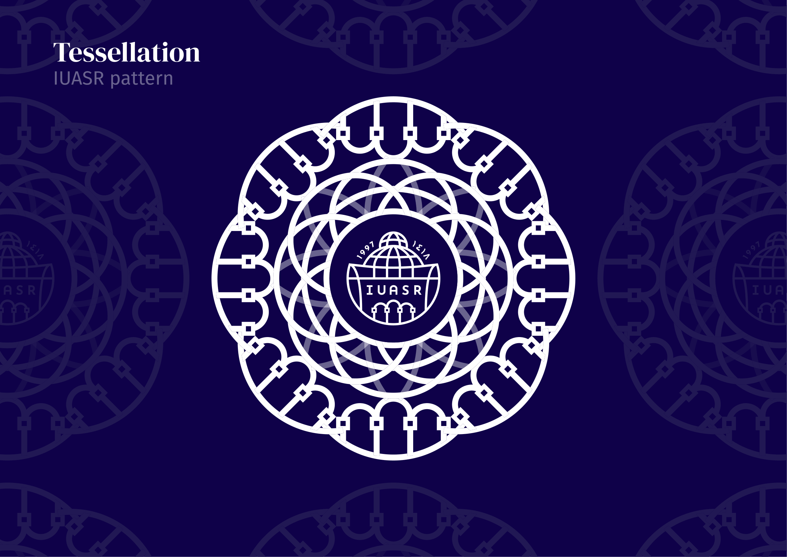
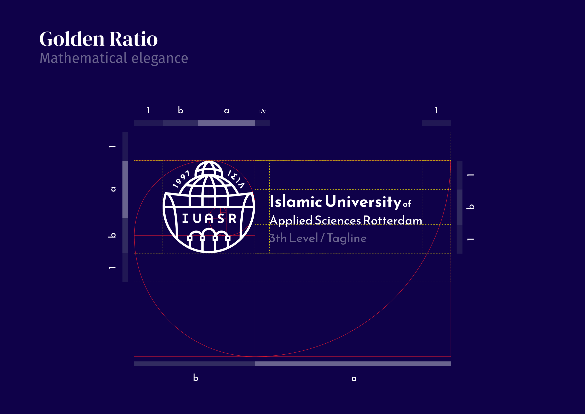
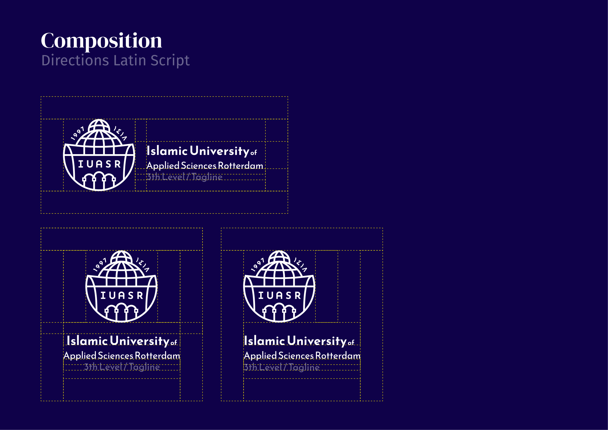
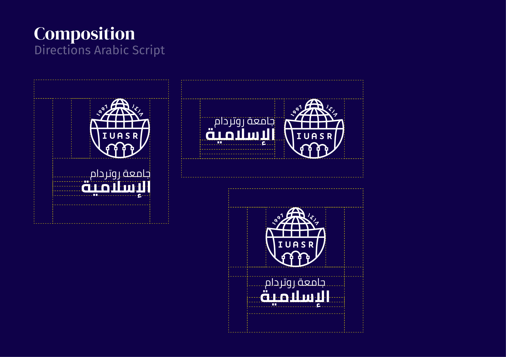
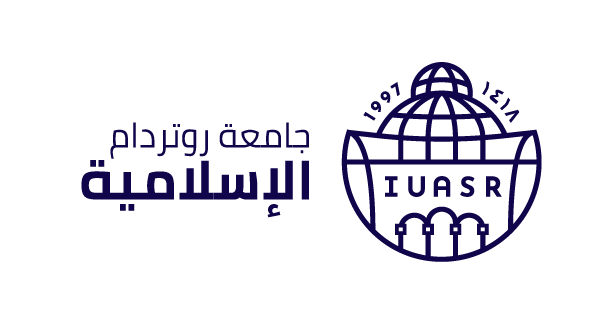

IUASR · Design System
Een rustig systeem
voor een klassiek instituut.
De visuele taal van het Islamic University of Applied Sciences Rotterdam — geformaliseerd tot één samenhangend systeem voor het studentportaal, communicatie en marketing. Helder, ingetogen en gemaakt voor de lange termijn.
Een ingetogen academische identiteit.
IUASR positioneert zich als een serieuze, internationaal verankerde universiteit van toegepaste wetenschappen. Het visuele systeem volgt die belofte: hoog-contrast typografie, gedempte kleuren met één duidelijke accenttoon, en compositie met veel rust eromheen.
Ontwerpprincipes
Vier uitgangspunten die elke ontwerp- en copybeslissing toetsen.
01
Vertrouwd & verzorgd
Een hoog-contrast didone-kop in combinatie met een rustige sans-serif. We kiezen zorgvuldig boven snel; lay-outs ademen, randen zijn fijn, schaduwen zijn zacht en getint.
02
Helder & rustig
Eén actie per scherm staat centraal. Crimson onderbreekt het rustige indigopalet alleen waar dat nodig is — voor een knop, een waarschuwing of een link.
03
Klassiek & modern
De serifkop verwijst naar academische traditie, de sans-body is bewust hedendaags. Samen vormen ze een stem die zowel respectvol als helder is.
04
Cultureel verankerd
Latijnse en Arabische varianten van het logo en de naam zijn gelijkwaardig. Tekst, padding en uitlijning houden rekening met beide leesrichtingen.
Toon & taal
De stem van IUASR is feitelijk, vriendelijk en formeel-warm. We zijn een Nederlandse universiteit; primaire copy is Nederlands, kleine details mogen Engels of Arabisch zijn.
Wel doen
- "Je aanmelding is in goede orde ontvangen."
- "Wij sturen een bevestiging binnen één werkdag."
- "Vraag bij twijfel je studieadviseur."
- Volledige zinnen. Eerst de actie, dan de context.
- Cijfers zijn precies: 14 juni 2026, niet "binnenkort".
Niet doen
- "Yo! Klaar om te knallen op de campus?" — geen plat-modern jargon.
- "Geweldig nieuws! Ongelooflijk gemakkelijk!" — geen marketingjubel.
- Geen emoji in formele communicatie of dashboards.
- Geen tutoyeren in juridische of financiële teksten.
- Geen onnodige Engelse termen waar Nederlands volstaat.
Erfgoed
De universiteit zit sinds 1997 in het monumentale Bergsingel-gebouw — gebouwd in 1921–1923 als derde HBS van Rotterdam, ontworpen door Walter Dahlen. De stenen herinneren ons aan onze rol: een eeuw onderwijs op deze plek voortzetten.

Bergsingel 135 · Rotterdam
Honderd jaar bouwwerk,
een kwart eeuw IUASR.
Het pand is in 1921–1923 opgetrokken als de derde HBS van Rotterdam, naar ontwerp van architect Walter Dahlen. Het overleefde de oorlog ongeschonden. Sinds 1997 huist IUASR hier en voert het deze plek voort als een baken van verlichting en wetenschap.
Het logo draagt twee jaartallen — de Gregoriaanse stichtingsdatum en het Hijra-equivalent — als stille verwijzing naar onze geworteldheid in twee tradities.
Gregoriaans · 1997
Hijra · ١٤١٨
Unificatie · common ground
De kerngedachte achter de huisstijl: twee tradities die elkaar niet uitsluiten maar samen één cirkel vormen. Het logo, de typografie en de kleuren zijn allemaal verankerd in dat principe.
Brand-principe
Twee helften, één cirkel.
Latijn en Arabisch, traditie en heden, geloof en wetenschap — IUASR plaatst geen van deze tegenover elkaar. In de huisstijl zien we dat terug in gelijkwaardige scriptvarianten, in evenwichtige composities en in een rustig palet dat nooit één toon laat domineren.
Geometrische oorsprong
Het embleem komt voort uit drie elementaire vormen. Elke laag voegt betekenis toe — van de eenvoudigste vereniging van cirkel en vierkant tot de gestileerde campus zelf.
Verbinding
Hemel ontmoet aarde.
Cirkel · vierkant
Oneindigheid
Vierkant wordt cirkel.
Achthoek
IUASR
De campus krijgt betekenis.
Verbonden lijnen
De drie elementen van het embleem
Binnen de cirkel staan drie architectonische elementen voor de identiteit van een academische gemeenschap. Ze hebben elk een naam en een betekenis — en mogen alleen in deze context worden gebruikt.
Madrasa
De plek van onderwijs.
Qubba · de koepel
Open-mindedness
Zoeken naar waarheid.
Linker- & rechterpijler
Gastvrijheid
Toegankelijk voor iedereen.
Drie portalen
Tessellation · het secundaire merkelement
Het embleem mag herhaald worden tot een rozet. Deze tessellatie is naast het logo zelf het belangrijkste visuele kenmerk van IUASR — gebruikt op covers, watermerken en op de achterzijde van visitekaartjes.

Brand pattern
Eén embleem,
een ornament zonder einde.
De tessellatie ontstaat door het IUASR-merk rond zijn middenpunt te rangschikken. Het is geen losse illustratie — het is een directe afgeleide van het logo, en gedraagt zich als zodanig: hetzelfde kleurgebruik, dezelfde lijndikte, dezelfde minimale spacing.
01Alleen in een merkkleur — indigo, groen of crimson — nooit gemixt met fotografie of gradients.
02Op covers en watermerken houdt het pattern minstens 50% opaciteit ten opzichte van de bg.
03Schaal nooit zo klein dat de afzonderlijke emblemen vervallen tot ruis (≥ 80 px per emblem).
Het embleem & de woordmerk.
Het IUASR-merkteken combineert het embleem — een gestileerde campus binnen een ring — met de Latijnse en Arabische woordmerken. Beide schriften zijn gelijkwaardig; gebruik de variant die bij de doelgroep en context past.
Primair · Latin · licht
De standaardvariant.
Gebruik deze versie op zachte achtergronden (#F2F1F4) of wit, in de meeste digitale en gedrukte uitingen. Het embleem links is het herkenningspunt; het woordmerk daarnaast voert de stem.
Minimumhoogte van het volledige logo is 24 px op scherm en 10 mm in druk. Onder die maten gebruik je het losse embleem.
Constructie · de gulden snede
De verhoudingen tussen embleem, woordmerk en tagline volgen de gulden snede. Niet als trucje, maar omdat het de visuele rust geeft die bij een klassieke universiteit hoort. Pas deze proporties nooit handmatig aan.

Mathematical elegance
Wat je voelt is gerekend.
Het embleem zit op een 1 / b-deling, het woordmerk daarnaast neemt het a-deel in. De tagline gebruikt de smalste subdivisie. Wie het logo opnieuw plaatst in een lay-out, plaatst eigenlijk gewoon dezelfde rasterdeling.
Het Hijra-jaar (١٤١٨) staat in spiegelbeeld om de cirkel — gelijkwaardig met 1997, niet ondergeschikt eraan.
Compositie · Latijn & Arabisch
Drie geldige lay-outs voor beide schriften. De keuze hangt af van de horizontale ruimte en de hiërarchie in de uiting. Stack niet wat eigenlijk horizontaal moet, en omgekeerd.

Latijn
links · gestapeld · uitgevuld
Arabisch
rechts · gestapeld · gespiegeldVarianten
Drie uitlijningen × twee schriften × twee tonen. Alle bestanden in /assets/logo/.
Default · Latin
light-default-latin.pngGecentreerd · Latin
light-centered-latin.pngLinks uitgelijnd · Latin
light-left-latin.png
Default · Arabisch
light-default-arabic.pngGecentreerd · Arabisch
light-centered-arabic.pngRechts · Arabisch
light-right-arabic.pngDonker · Latin
dark-default-latin.pngDonker · Arabisch
dark-default-arabic.pngEmbleem
logo-icon.pngVrije ruimte
Houd minimaal de hoogte van een embleem-eenheid (x) vrij rond het logo. Andere elementen — tekst, beeld, randen — komen daarbinnen niet.
- Definitie van x
- x = hoogte van het embleem in de gekozen variantDe vrije ruimte rondom het logo is altijd minstens 1×x.
- Schermgebruik
- Minimumhoogte logo: 24 px (compleet); 20 px (alleen embleem).Daaronder wordt het embleem onleesbaar.
- Drukgebruik
- Minimumhoogte logo: 10 mm (compleet); 6 mm (embleem).Hou bij visitekaartjes 4 mm vrije ruimte buiten het logo.
- Plaatsing
- Links bovenaan in headers; gecentreerd in formele documenten.Niet roteren, niet vervormen, geen drop shadows of glows.
Schaal
Drie standaardmaten voor digitaal gebruik.
Hero · 64 px
Header · 40 px
Compact · 28 px
Favicon · 28 px
Tab · 16 px
Wat niet te doen
Vier patronen die de identiteit verzwakken. Bij twijfel: terug naar de standaardvariant.
Niet inverteren op verkeerde grondGebruik de donker-variant op indigo, niet de licht-variant.
Niet roteren of vervormenHoud het logo orthogonaal en proportioneel.
Niet op kleurverloop plaatsenWij gebruiken geen gradients. Plaats het logo op een effen merkkleur.
Geen drop shadow of glowHet logo staat altijd plat op de achtergrond.
Vier merkkleuren, één duidelijke hiërarchie.
Indigo (Pantone 2765 C) is het hart van de huisstijl. Crimson onderbreekt, groen markeert publicaties (IUASR Press), goud is voorbehouden aan ceremoniële uitingen. De pagina-achtergrond is bewust géén wit (#F2F1F4) zodat witte vlakken automatisch een subtiel hoogteverschil hebben.
Officiële basiskleuren · Pantone
Direct uit het corporate identity-handboek. Gebruik deze Pantone-equivalenten voor drukwerk en de exacte hex-waardes voor digitaal.
Pantone 2765 C
Indigo
#201547 · priColor100
Pantone 626 C
Heritage groen
#285C4D · priColor200
Pantone 7563 C
Goud
#D69A2D · priColor300
Pantone 186 C
Crimson
#C8102E · secColor100
Rolverdeling in product
Voor het studentportaal en website-UI zijn drie rollen genoeg. Groen en goud blijven voorbehouden aan publicaties en ceremoniële uitingen.
Primair
Hoofdtekst, navigatie, footer, donkere vlakken, illustraties.
Indigo 800#201547 · priColor100
Accent
Primaire knoppen, links, focus rings, foutmeldingen.
Crimson 600#C8102E · secColor100
Highlight
Callouts, eyebrows, hover-bg's, sectie-onderscheid.
Peach 200#FFD2B0 · secColor300
Indigo-schaal
Afgeleide tinten voor borders, surfaces en hover-states. Hex-anchor 800 is de officiële merkkleur.
50
#F0EEF5100
#D8D2E5200
#B0A6CD300
#837AAC400
#534095800 ★
#201547900
#15123ACrimson-schaal
Voor primaire acties en kritieke staten. Niet voor decoratie.
50
#FBE7EB100
#F5C2CC200
#E68A98300
#DC5266400
#D02D45600 ★
#C8102E700
#9A0C24Peach-schaal
Voor callouts en zachte vlakken; nooit als hoofdkleur in tekst.
50
#FFF4EC100
#FFE2CE200 ★
#FFD2B0300
#F5A573400
#ED7F36500
#D86810600
#A8500DHeritage-groen · IUASR Press
Pantone 626 C wordt gebruikt op groene covers van de IUASR Press en bij sub-merken die expliciet als zustermerk gepresenteerd worden. Niet in regulier portaal-UI.
50
#EAF1EE100
#C8DBD3200
#7FA89B300
#4B8273500 ★
#285C4D700
#1B4338Goud · ceremonieel accent
Pantone 7563 C voor diplomas, oorkondes en jubilea. Combineert met indigo of groen; nooit als hoofdkleur in webdesign.
50
#FBF3E2100
#F4E0AC200
#EAC472500 ★
#D69A2D700
#A87520800
#7A5616Achtergrond, randen & tekst
De pagina-achtergrond is lavendel-getint, niet wit. Witte kaarten en formulieren steken daardoor zacht naar voren.
--priColor103rgb(242, 241, 244)Pagina-achtergrond
#FFFFFFrgb(255, 255, 255)Kaart, formulier, modaal
--priColor102rgba(32, 21, 71, 0.06)Subtiel surface (alt rows, hover)
--priColor101rgba(32, 21, 71, 0.03)Allerlichtste tint (tabel head)
--borderSubtleColorrgba(32, 21, 71, 0.09)Dividers en kaartranden
--borderColorrgba(32, 21, 71, 0.2)Input borders, default knoprand
--blackAltText#6F6F6FSecundaire tekst, captions
--priColor100#201547Primaire tekst (alle leesgrootte)
Lifecycle & semantisch
Statuskleuren voor aanmeldingsdashboards en feedback. We gebruiken peach-opaciteiten en indigo-tints uit de huisstijl; alleen "goedgekeurd" en "afgewezen" stappen buiten het palet voor leesbaarheid.
Concept
Ingediend
Onvolledig
Wacht op documenten
Wacht op betaling
Goedgekeurd
Afgewezen
Info
Twee schriften, vier families.
DM Serif Display voert de stem in titels en koppen, Fira Sans draagt alle lopende tekst, formulieren en navigatie. Voor Arabisch werken we met Reem Kufi voor displays en logo-context, en Cairo voor lopende tekst. De vier families delen openingstijden en proporties — ze ademen samen.
Display · koppen
Aa
Aanmelden bij IUASR
Body · ui
Aa
Een rustig portaal voor je studie.
Typografische schaal
Exact gescraped uit iuasr.nl. Onthoud: koppen serif, body sans, schaal blijft consistent.
Display
64 / 68
Klassiek & nieuw
DM Serif Display
h1
38.4 / 46
Aanmelden voor het collegejaar
DM Serif Display
h2
24 / 29
Stap 1 — persoonsgegevens
Fira Sans 200
h3
19.2 / 23
Voltooi je inschrijving
DM Serif Display
h4
18 / 22
Persoonsgegevens
Fira Sans 500
Body
16 / 24
Standaard portaaltekst — leesbaar in formulieren, dashboards en lange instructies.
Fira Sans 400
Body light
16 / 24
Marketing-tekst — lichter, luchtiger, voor lange leespagina's.
Fira Sans 200
Caption
12.5 / 18
Hulptekst onder velden, voetnoten, metadata in tabellen.
Fira Sans 300
Eyebrow
11 / 14
Belangrijke deadline · Stap 3 van 5
Mono · 0.1em LS
Button
16 / 24
Aanmelden
Fira Sans 400
Nav
14 / 20
Dashboard · Documenten · Berichten
Fira Sans 400
Fira Sans gewichten
Gebruik 200 voor luchtige marketingkoppen, 400 standaard, 500 voor labels en metadata, 600/700 alleen voor sterk benadrukken in lopende tekst.
Aa200 · thin
Aa300 · light
Aa400 · regular
Aa500 · medium
Aa600 · semibold
Aa700 · bold
Arabisch · Reem Kufi & Cairo
Reem Kufi voor displaytekst, koppen en taglines naast het logo. Cairo voor lopende tekst, formulieren en navigatie in Arabische uitingen. Beide families zijn ontworpen om naast Fira Sans en DM Serif Display te ademen.
جامعة روتردام
الإسلامية
Gebruik bij koppen, taglines en in combinatie met het embleem. Geometrisch, kufic-geïnspireerd, hoog contrast — past optisch bij DM Serif Display.
في عام التسجيل القادم، ستفتح الجامعة الإسلامية باب القبول لثلاثة برامج بكالوريوس.
يبدأ التسجيل في الأول من فبراير. وتنتهي المهلة الأخيرة في الرابع عشر من يونيو.
Voor alle lopende tekst, knoppen en formulieren in Arabische uitingen. Humanistisch sans-serif, lijnt mooi uit met Fira Sans bij tweetalige lay-outs.
Specimen
Een proefblok zoals het in een nieuwsartikel of beleidsdocument staat.
Specimen · december 2025
Het collegejaar opent in september.
De eerste collegeweek staat in het teken van introductie, kennismaking met het docententeam en een rondleiding op de Bergsingel-locatie.
De Islamitische Universiteit van Toegepaste Wetenschappen Rotterdam leidt studenten op tot academische professionals met een diepgaande kennis van klassieke islamitische tradities én moderne maatschappelijke vraagstukken. Een opleiding die zowel ruimte biedt aan reflectie als aan toepassing.
In het collegejaar 2026/2027 starten drie bacheloropleidingen: Islamitisch Recht, Pedagogische Wetenschappen en Theologie. Voor elke richting geldt een vooropleidingseis van HAVO, VWO of MBO 4, plus een intakegesprek met een studieadviseur.
Aanmelden kan vanaf 1 januari via het studentportaal. Voor vragen over toelating, leningen of internationale diploma's staan onze medewerkers Studentenzaken op werkdagen klaar tussen 09:00 en 17:00.
Een logisch systeem op een basis van 4 px.
Spacing volgt een vast ritme; afstanden zijn altijd een veelvoud van 4 px. Daardoor stapelt UI vanzelf en blijven verticale ritmes consistent over componenten heen.
Spacing-schaal
De zes anchors uit de portaal-tokens. Gebruik --space-* in alle layout-CSS.
--unitSize
4 px · 0.25rem
--space-xs
10 px · 0.625rem
--space-sm
18 px · 1.125rem
--space-md
32 px · 2rem
--space-lg
44 px · 2.75rem
--space-xl
64 px · 4rem
Container & grid
Een 12-kolommen grid met een gutter van 16 px. Maximumbreedtes per context.
12 kolommen · gutter 16 px · max 1280 px (portaal) · 960 px (lange leestekst) · 640 px (formulier)
Radius
Hoeken zijn rustig en consistent. Cirkels alleen voor avatars en kleine status-dots.
--iuasr-radius-sm
4 px · knoppen, inputs, badges
--iuasr-radius-md
8 px · kaarten, modals, callouts
--iuasr-radius-lg
12 px · hero-blokken, grote panelen
--iuasr-radius-full
∞ · status, avatars, pillen
Schaduw
Onze schaduwen zijn indigo-getint, niet neutraal grijs. Dat geeft het portaal zijn warme diepte.
--iuasr-shadow-sm
rgba(32, 21, 71,0.08) 0 2px 8px
--iuasr-shadow-md
rgba(32, 21, 71,0.15) 0 4px 20px
shadow-lg (modal)
rgba(32, 21, 71,0.22) 0 16px 48px -8px
De bouwstenen van het portaal.
Knoppen, formulieren, kaarten, navigatie, tabellen en dashboardwidgets. Allemaal gebouwd op dezelfde tokens — dezelfde radius, hetzelfde ritme, dezelfde focus-ring.
Knoppen
.btn · 41 px · 4 px radius · 2 px borderVarianten · standaardgrootte
Met icon
Maten
Statussen
Formuliervelden
.fld · 41 px · 4 px radius · 1 px border
Zoals op je legitimatiebewijs staat.
Beschikbaar.
Vul een geldig e-mailadres in.
Wordt automatisch gevuld vanuit je profiel.
Keuzes & toggles
Badges & status
.badge · .statusLifecycle aanmelding
Concept
Ingediend
Onvolledig
Wacht op documenten
Wacht op betaling
Goedgekeurd
Afgewezen
Inline badges
Nieuw
Deadline 14 juni
Open Dag
Bachelor
Kaart & callout
.card-demo · .calloutBachelor · 3 jaar
Islamitisch Recht
Een hoofdrichting voor wie zich wil verdiepen in klassieke fiqh én in toepassing binnen de Nederlandse context.
Belangrijke deadline
Aanmeldperiode 2026/2027 sluit 14 juni.
Vergeet niet je gewaarmerkte diplomakopie en motivatiebrief tijdig te uploaden. Aanmeldingen na deze datum worden in de wachtlijst geplaatst.
Alerts
.alert
Tip. Je kunt je aanmelding op elk moment tussentijds opslaan en later afmaken.
Bevestigd. Je documenten zijn ontvangen — we beoordelen ze binnen vijf werkdagen.
Let op. Je intakegesprek staat over 48 uur. Bevestig of verzet via je dashboard.
Aanmelding afgewezen. Je vooropleiding voldoet niet aan de toelatingseisen. Bekijk alternatieven in je dashboard.
Navigatie
.nav-demo · breadcrumbs · tabsTabs
Paginering
…
Tabel
.tbl · gestreepte hover, sticky header in app| Aanmelding | Opleiding | Status | Ingediend | Acties |
|---|---|---|---|---|
| #A-2026-0142 | Bachelor Islamitisch Recht | Wacht op documenten | 14 mei 2026 | |
| #A-2026-0138 | Bachelor Theologie | Goedgekeurd | 09 mei 2026 | |
| #A-2026-0121 | Bachelor Pedagogiek | Ingediend | 02 mei 2026 | |
| #A-2026-0098 | Master Theologie | Afgewezen | 18 april 2026 | |
| 4 van 17 aanmeldingen getoond | ||||
Modal
.modal-demo · indigo overlay · 32% opacityAanmelding intrekken?
Je aanmelding voor de Bachelor Islamitisch Recht 2026/2027 wordt definitief verwijderd. Reeds ingediende documenten blijven 90 dagen bewaard.
Dashboard widgets
.widget · .progress · .timelineTijdlijn — aanmeldproces
Ingediend
Ontvangst-bevestiging
●Documenten controle
4Intakegesprek
5Toelating
6Inschrijving
Lijniconen, rustig en herkenbaar.
Onze iconen zijn lijntekeningen op een 24-px grid: 1,5 px lijndikte, ronde lijneinden, ronde hoeken (radius 2 px op de stroke). Geen kleur, geen vulling — kleur komt van de tekst eromheen.
Voorbeeldset
Een kerncollectie voor het portaal — uitgewerkt in dezelfde stijl voor het volledige systeem.
Illustratiestijl
Voor figuratief beeld kiezen we voor fotografie van de Bergsingel-locatie en docenten, niet voor stockillustraties of cartoony spot illustraties. Beelden zijn rustig, natuurlijk belicht en altijd in context.
Foto’s vertellen het verhaal van onze plek.
Documenteer echte momenten: een docent in gesprek, een student in de bibliotheek, een rondleiding op de Bergsingel. Geen geënsceneerde lifestyle-fotografie, geen mensen met stockglimlach.
Tonen: natuurlijk daglicht, gedempte kleuren, ruimte om iemand heen. Vermijden: extreem grading, lensflare, zwaar bewerkte uitsneden.
Interactiestatussen, voorspelbaar voor elk component.
Knoppen, links, formulieren en kaarten gebruiken dezelfde set statussen. De crimson-focusring verschijnt overal waar de gebruiker is — toegankelijkheid is geen extra laag.
Default
Hover
Focus
Active
Disabled
Primary
Secondary
Input
Toegankelijkheid
Drie regels die in elke staat gelden — niet alleen op afspraak.
Focusring is verplicht
Crimson glow van 3 px op alle interactieve elementen. Nooit weggeretoucheerd — ook niet in custom componenten.
Kleur is nooit alleen
Status, fouten en succes worden ook door tekst of icon gecommuniceerd — niet alleen rood of groen.
Contrast ≥ 4,5:1
Indigo op #F2F1F4 zit op 14:1. Crimson op wit op 6:1. Alle hoofd-combo's voldoen aan WCAG AA.
Beweging die rust ondersteunt, niet onderbreekt.
Onze animaties zijn kort, gericht en functioneel. Ze geven feedback op een actie of begeleiden een element op zijn plek — nooit decoratief en nooit afleidend.
Duur
Vier vaste duraties. Alles korter dan 120 ms is onbewust; alles langer dan 500 ms voelt traag.
120 ms
--iuasr-duration-fast
Hover, focus, subtiele kleurwissels.
200 ms
--iuasr-duration-normal
Buttons, inputs, tabs, expanderen.
320 ms
duration-slow
Modals, drawers, paneel-transities.
520 ms
duration-entry
Eerste binnenkomst van een pagina.
Easing
Eén standaardcurve. Geen bouncy springs in productie-UI — alleen in opt-in micro-momenten.
--ease-standard
cubic-bezier(0.2, 0, 0, 1)
ease-out
cubic-bezier(0, 0, 0.2, 1)
spring (opt-in)
cubic-bezier(0.5,1.7,0.4,1)
linear
linear · alleen voor progress
Patronen
Klik op een stage om de animatie te triggeren. Alle animaties respecteren prefers-reduced-motion.
Aanmelding
#A-2026-0142
Card reveal
16 px vertaal omhoog, fade-in. 420 ms, ease-standard. Voor kaarten en lijst-items.
klik om te spelen
Button feedback
Pulse 240 ms naar 0.97×. Bevestigt een klik zonder geluid of trilling.
klik om te spelen
Staggered list
Cascade van 80 ms tussen items. Voor binnenkomende lijsten of search-resultaten.
stap 3 van 5
klik om te spelen
Progress
Linear easing, 600 ms. Lengte communiceert waarde — niet de timing.
loopt continu
Loading state
Shimmer 1400 ms, ease-in-out. Voor data die laadt — niet voor formulieren.
Nieuw bericht
Page transition
Subtiel: 20 px omhoog + fade. 520 ms entry. Geen horizontale slides, geen 3D.
Principes voor motion
Drie regels die elk animatievoorstel toetsen.
Communicatief
Elke animatie communiceert een staat (verschijnen, klaar, foutief). Decoratie zonder reden hoort hier niet thuis.
Kort & helder
Tussen 120 en 520 ms. Begin- en eindpositie zijn duidelijk; we vermijden continue loopende beweging.
Respect voor de gebruiker
prefers-reduced-motion: reduce schakelt alle niet-noodzakelijke animaties uit. Standaardgedrag, geen optie.
Het systeem in toepassing.
Vier voorbeelden van hoe deze fundamenten samenkomen — een marketinghero, een portaalpagina, een transactionele e-mail en een marketing-sectieblok. Allemaal opgebouwd uit dezelfde tokens.
Marketing hero
iuasr.nl / BachelorOpen Dag · 23 mei 2026
Studeren waar traditie
op toepassing aansluit.
Bezoek onze open dag op de Bergsingel-locatie. Maak kennis met docenten, loop een college mee en stel je vragen aan studieadviseurs.
Studentdashboard
/mijn-iuasrWelkom terug, Aïsha
woensdag 27 meiBachelor Islamitisch Recht · 2026/2027
✓Ingediend
✓Ontvangst
●Documenten
4Intake
5Toelating
Transactionele e-mail
aanmelding ontvangenBevestiging aanmelding
Je aanmelding is in goede orde ontvangen.
Beste Aïsha,
Hartelijk dank voor je aanmelding voor de Bachelor Islamitisch Recht. We controleren je documenten binnen vijf werkdagen en sturen daarna een uitnodiging voor een intakegesprek.
Je kunt de voortgang van je aanmelding op elk moment volgen in je dashboard.
Met vriendelijke groet,
Studentenzaken IUASR
Marketing-sectie
Over onsOnze plek
Een rustige campus in het hart van Rotterdam.
Aan de Bergsingel — een groen, klassiek hoekje van Rotterdam-Noord — vinden onze colleges, ontmoetingen en bibliotheek-uren plaats. Op loopafstand van metrolijn E.
Bergsingel 71
3037 GD Rotterdam · op werkdagen open van 09:00 tot 17:00
Studentenzaken
szaken@iuasr.nl · 010 – 760 14 22